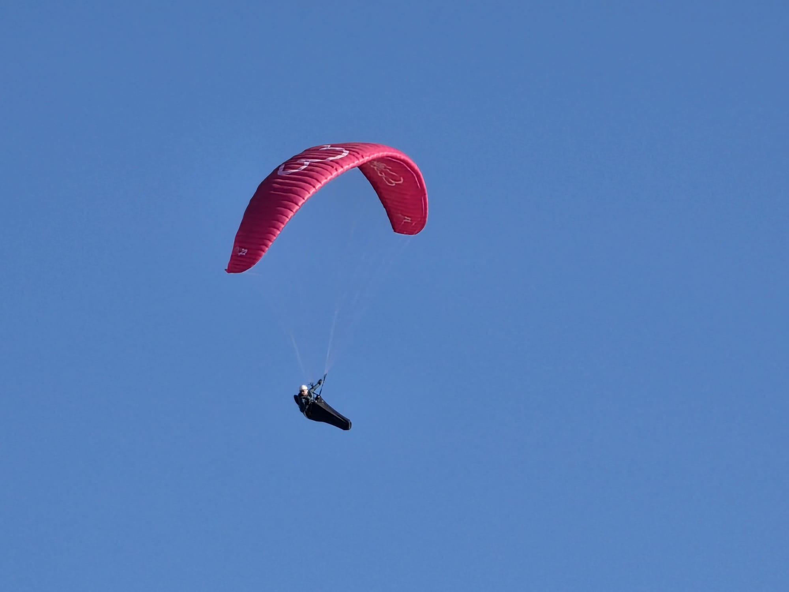

Déroulement du Stage
Jour 1 : Réévaluation & Pente école
Retour en pente école pour analyser vos acquis. Réglage personnalisé de la sellette, définition des objectifs de la semaine et cours théorique de rappel.
Jour 2 : Décollage face voile & Premiers vols
Travail technique au sol sur le décollage face voile pour acquérir les bons gestes. Réalisation de grands vols de perfectionnement.
Jour 3 : Exercices de pilotage en vol
Vol avec exercices pratiques (tangage, roulis, oreilles) sous contrôle radio. Théorie sur les approches et la gestion d'atterrissage.
Jours 4 & 5 : Exploitation des ascendances
Vols du matin dans des aérologies calmes, puis exploitation des premières ascendances thermiques de fin de matinée. Vols du soir en restitution.
Nos Objectifs Perf 1
- Exercices de pilotage de base (tangage, roulis, oreilles)
- Apprentissage et autonomie du décollage face voile (sur 5 jours)
- Développement de l'autonomie à l'atterrissage
- Objectif de 12 grands vols (selon conditions météo)
Prestations Incluses
- Enseignement de qualité par 2 moniteurs brevetés d'État
- Prêt de l'équipement complet (voile, sellette avec secours, radio, casque)
- Cours théoriques adaptés sur les 4 axes
- Navettes vers les sites de vol de la région
À Prévoir par le Stagiaire
- ✅ Tenue de montagne et gants obligatoires
- ✅ Chaussures de montagne ou de sport montantes
- ✅ Certificat médical FFVL de moins d'un an
- ✅ Autorisation parentale pour les mineurs
Gestion des conditions météo
En cas de pluie ou de vent trop fort, nous adaptons le programme : cours théoriques de météo avec David Vayrette, réglementation aérienne avec Stéphane Henry, ou découverte de l'autogire (inclus dans le prix du stage). Remboursement au prorata en cas d'annulation forcée.
Actualités & Bons Cadeaux
Offrez un Bon Cadeau pour un vol inoubliable
Faites plaisir à vos proches en offrant un bon cadeau pour un baptême de l'air en Parapente. Valable 1 an.
Formations et Stages Saison 2026
Les inscriptions pour la saison de vol libre 2026 sont officiellement ouvertes chez Haut les Mains. Rejoignez-nous pour apprendre à voler en Provence.